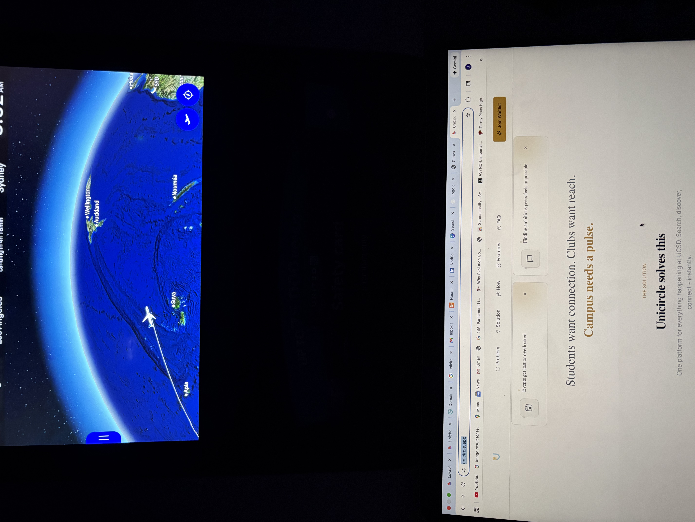

How I got started.
I’ve always noticed design, especially the fountains and fire features that make a space feel finished. That interest led me to co-found Valyrian Designs, where we design and manufacture custom architectural fountains, water features, and fire features. I learned by doing: talking with customers, pricing pieces, working with manufacturers, and seeing designs through to the end.
That led me to product marketing at Trust & Will, and then to product management at LPL Financial. The lessons below come from those experiences and from what I’m studying.
- School
- UC San Diego
- Major
- Communication
- Minors
- Entrepreneurship & Technology, Marketing
- Graduating
- June 2027
What I’ve learned so far
Six lessons from school, work, and building things. Pull a bookmark to read the story behind it.

Curiosity can uncover a better way
Going the extra mile doesn’t always mean working harder.
At LPL Financial, I noticed my team spending a lot of time searching for information about repapering processes and repeating the same tasks. It wasn’t part of my assignment, but I started exploring AI tools, built internal knowledge agents, and looked for workflows we could automate.
One of the agents was adopted by about 50 active internal users. Sometimes doing more means questioning how things are done and finding a smarter way.
Understand the problem before building
A solution is only as good as your understanding of the problem.
My LPL capstone was about improving repapering during the Commonwealth transition. I was given a broad goal without a clear roadmap. I couldn’t interview financial advisors directly, so I interviewed business transition partners and operations teams and reviewed past research.
That surfaced problems with workflow visibility and coordination, and I designed a high-fidelity dashboard prototype to address them. The proposal is projected to save about 200 hours a year.
Own the outcome, not just your part
Ownership means considering the whole process.
At Valyrian Designs, bringing a product to market means balancing what the customer expects with what can be manufactured, what it costs, the margin, and the quality of the finished piece. A decision in one area changes the others.
Running a business with my dad taught me to look past my own task and think about how each choice affects the final result.
Listening is a product skill
Communication is how you understand the people you’re building for.
Studying Communication has taught me to notice how people see things differently, to communicate clearly, and to ask better questions. I use those skills in stakeholder interviews, product discovery, and when working across teams.
The same skills carry into community building, including co-founding Women in Technology at UC San Diego.
Build, test, and change your mind
Building something is only the beginning.
I started Unicircle to help students discover campus organizations. Conversations with student leaders showed me that managing recruitment was a bigger problem, so I built an MVP, gathered feedback, and iterated.
At one point, 58 organizations had received applications but only 21 had reviewed candidates. That activation gap taught me to watch what people actually do and adjust my assumptions.
My background can be an advantage
The most useful perspective isn’t always the most traditional one.
I came to technology through Communication and entrepreneurship, not a traditional technical major. At Trust & Will, I worked in product marketing, explaining complex estate-planning products clearly. At LPL, I moved into product management: discovery, technical prototyping, and execution.
Together, those experiences taught me to bring customer empathy, storytelling, business judgment, and technical curiosity to the same problem.

Outside of school
A lot of my week happens away from a screen. I volunteer with kids and serve at my church, and both remind me that the people around me matter more than anything on my to-do list.
Health and wellness are a big part of my life. I run, do Pilates and yoga, and I’m training to become a fitness instructor. When I can, I’m outside, whether that’s the beach here in San Diego or somewhere new. I love to travel, and seeing how other people live always gives me a new way of looking at things.
Right now I’m reading The Purpose Driven Life.
A few kind words
“That balance of tactical execution and big-picture thinking is rare.”
“You took every challenge and opportunity given and handled all with so much grace and professionalism.”